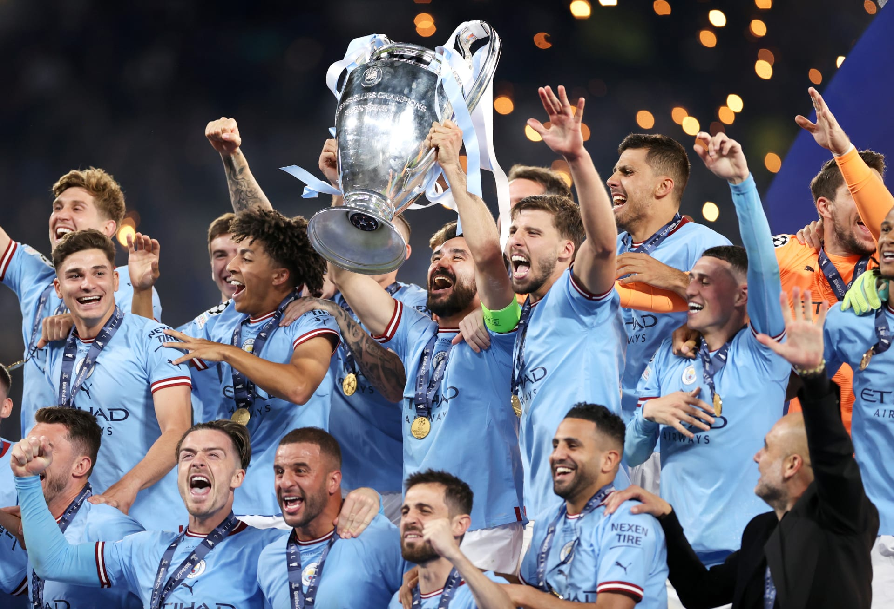
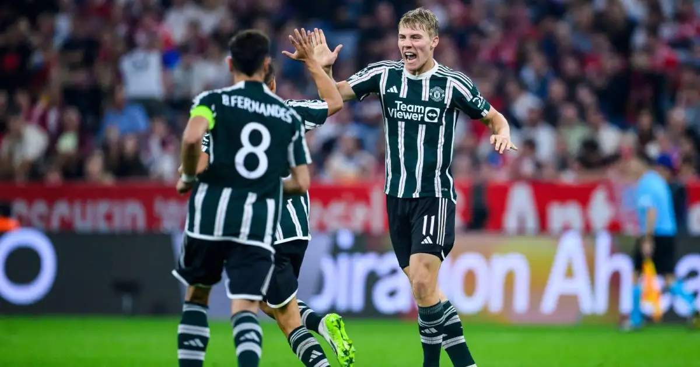
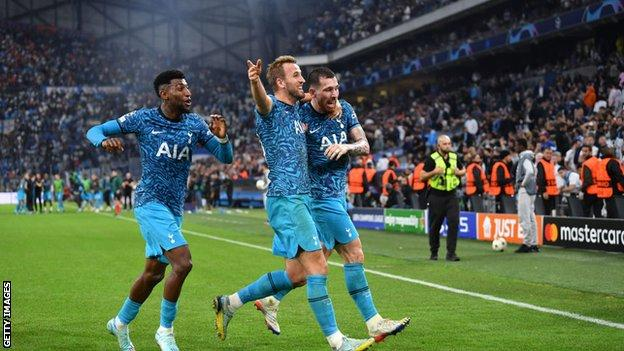
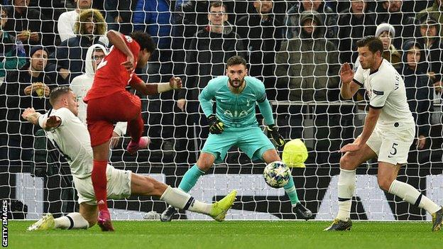

Champions League: Rank great group games with format set to change from next season

This week will mark the end of the Champions League group stages as we know them.
From next season the competition will adopt a Swiss league format, with all of the 36 sides involved in one group and table.Each side will play eight games, instead of the current six, and there will be a new knockout play-off round introduced between the league stage and last 16.
We've trawled through the archives and picked out some of the great group games from years gone by.Don't forget to rank yours at the bottom and ask your friends to do the same.
Galatasaray 3-3 Man Utd, 2023
Most great games have mistakes in, don't they? That was certainly the case in this game with Red Devils summer signing Andre Onana twice letting free-kicks in from Hakim Ziyech when he should have perhaps done better. United had raced into a two-goal lead, including a thunderbolt from Bruno Fernandes, but ended up having to settle for a point in a classic match they had led 3-1
Manchester United blew a two-goal lead as their hopes of reaching the last 16 of the UEFA Champions League suffered a major blow following a pulsating 3-3 draw in hostile conditions away to Galatasaray.
The Red Devils led 2-0 and 3-1 in Istanbul but once again failed to protect significant advantages in Europe this season to leave their hopes of progressing from Group A hanging by a thread.
Marseille 1-2 Tottenham, 2022
Tottenham are never far from drama in the Champions League.
How about a 95th-minute winner to seal your place in the knockout stages?
Spurs went behind against their French hosts and, if the scoreline had stayed that way, they were destined to drop to third in their group and as a consequence Europa League beckoned.
But Clement Lenglet equalised and, with Marseille piling on the pressure as they needed to win to progress, Pierre-Emile Hojbjerg struck a late winner to confirm Spurs as group winners.
Spurs' position in the group had changed six times over the course of the match, and it was one of the great evenings of ebbs and flows.
Tottenham 2-7 Bayern Munich, 2019
It was a disastrous night for Spurs boss Mauricio Pochettino as his side capitulated at home to the eventual German Bundesliga champions. He was sacked less than seven weeks later.
Spurs actually took the lead through Son Heung-min, but Bayern scored five unanswered goals.
Harry Kane scored from the penalty spot to reduce the arrears, but Serge Gnabry, formerly of Arsenal, then scored his third and fourth goals on an evening to savour for the visitors.
Tottenham Hotspur's troubles continued as they were humiliated in the most devastating fashion by Bayern Munich in the Champions League on one of the most embarrassing nights in their recent history as Serge Gnabry scored four goals.
The scale of this thrashing for manager Mauricio Pochettino and his players was made even more stark by the fact they took an early lead through Son Heung-min and were on level terms until just before half-time.
Bayern posed a huge threat throughout and were quickly on terms through Joshua Kimmich's superb 20-yard finish - but Spurs failed to heed the warning signs and ended up reduced to a rabble as they sunk without a fight in the second half. Strange as it may seem looking at the scoreline, this was an enthralling encounter that really turned on the stroke of half-time when, with matters in the balance, Robert Lewandowski produced a brilliant turn and right-foot finish past Hugo Lloris from 20 yards.